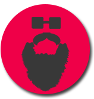

Sim... Sou o Desenvolvedor Supremo.
Sou conhecido pelas minhas criações como "o Criador", naturalmente. Alguns me chamam de Mano lá de cima, Thor, Zeus, Rá, Mahatma Gandhi, Chuck Norris, Bacon, Morgan Freeman, Milkshake de Negresco do Burguer King, e por aí vai. Mas poucos sabem que meu verdadeiro nome é , já que só os muito inteligentes conseguem ver.
Meu hobby favorito é observar o que minhas criações fazem enquanto evoluem. De vez enquando, gosto de causar o caos, só pra me divertir. É como um sábio chamado Chuck Palaniuk disse certa vez, “All Morgan Freeman does is watch us and kill us when we get boring. We must never, ever be boring.”.
E sim... Eu vejo tudo...